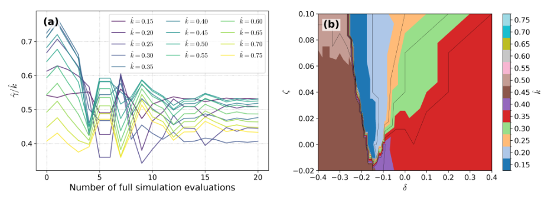
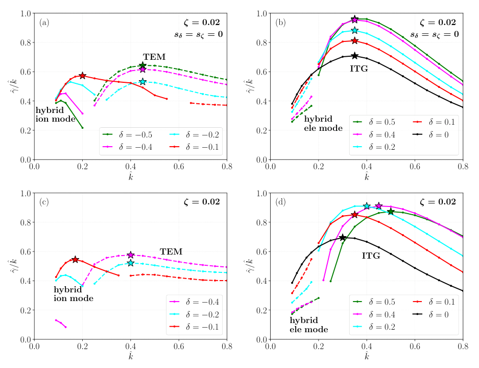

CGYRO 动态优化：在非光滑谱上寻找低输运塑形
Dynamic Optimization Workflow for Gyrokinetic Stability and Transport
原文与出版信息 ↗ · 据用户提供版本整理；公式离线预渲染；原图为关键图精选，非全文翻译。
一句话与研究定位
本文把 CGYRO、libEnsemble 和 IBCDFO 接成一个动态优化流程：不只压低某个波数的增长率，而是寻找使整个离子尺度谱上最危险分支尽可能小的局部磁面形状。核心贡献是能处理昂贵、无解析梯度且存在分支切换的模拟目标；不是已经完成了非线性输运或反应堆全局形状优化。（原文第 1—4 页）
示范对象取自 DIII-D 负三角形放电 #171646，在 的单个磁面上改变三角形变与方形变。应把结果理解为给定剖面、固定其他参数下的局部线性稳定性研究，而非实验运行方案。
目标函数：为什么是谱上取最大值？
令 表示待优化形状，定义归一化增长率和波数：
原文式 (1) 的目标是最小化
这里的“最大”是目标内部对谱的选择，外层优化仍然是求最小值。只优化一个波数可能使该模式变稳，却把主导不稳定性推给另一个波数；谱上最大值把这个漏洞纳入目标。采用 而非单独 ，来自径向波数混合的带状流饱和假设：该比值与带状 速度均方根相关。但它只是可能更接近非线性输运的线性代理量，论文没有给出它对非线性热流的定量验证。（第 3 页）
最危险波数随形状改变时，即使每条分支本身光滑，最大值组成的上包络也会出现折点。可写成 ，其中 收集各谱分量， 是已知的最大值选择算子。流形采样并不直接拟合有折点的总目标，而是为分量建立局部模型，再利用已知组合结构产生候选点。需要留意：把昂贵分量视为光滑是算法结构假设，单个波数处真实模态切换与数值噪声仍值得检查。
优化算法与计算调度各自解决什么？
基于模型的无导数优化复用已算过的点，构建与更新局部替代模型，以较多的便宜线性代数换取较少的昂贵回旋动理学调用。这区别于依赖大种群的大量随机或进化采样，也不等同于完全不使用局部结构。libEnsemble 则负责 manager–worker 调度：分配资源、启动并行模拟、收集输出；对迟迟不返回的评估回收并重新部署资源。优化器决定“下一步算哪里”，调度器决定“哪些资源去算”。（第 2—4 页）
与伴随法相比，这一路线不要求改写 CGYRO 或实现可微求解器。伴随法在维数很高且目标光滑时很有吸引力，因为梯度计算成本不随参数维数线性增加；本文选择无导数方法是为了适配现有黑箱与非光滑谱目标，不是证明伴随法通常不适用。论文也未提供与所有竞争算法在相同预算下的系统性能排行榜。
MXH 形状参数与受控实验
采用 Miller extended harmonic 参数化，原文式 (2)—(4) 为
其中 、； 描述上下不对称分量， 描述上下对称分量。局部几何不仅由磁面的轮廓决定，还需要参数的径向导数。本文实际只优化 ，把拉长比固定，因为拉长在此类扫描中稳定作用较强，容易把优化推到搜索上界。（第 4—5 页）
基线表 1 给出 、磁剪切 、、、，以及 、。电子 beta 被人为调低，不能把这一计算设置直接等同于完整实验状态。
作者比较两种几何梯度处理：第一种人为设 ；第二种按实验值线性缩放，使椭圆极限的对应梯度消失：
这不是由全局平衡自洽演化产生的梯度，而是明确指定的局部参数路径。阅读时尤其不要把 的谐波系数导数与裸 导数随意互换；复现应以 CGYRO 输入定义和实现为准。
关键原图精选
以下选取原文第 7 页图 2、3；图中颜色与符号保留原样，完整图组见原文。


结果：最优点来自两类不稳定性的折中
| 设置 | 报告的最优点 | 应如何解读 |
|---|---|---|
| 形状梯度设为零 | ，从原点出发 20 次迭代 | 负三角形区存在局部优势，方形变影响较弱 |
| 梯度随形状线性缩放 | 方形变最优值落在搜索上界，不能称作无约束全局最优 |
无形状梯度时， 约为 −0.1 至 −0.3 的区域更稳定；正三角形区目标随 增大而上升。原文图 2 的活动谱分量不断切换，直接展示为什么总目标不光滑。第 6—8 页图 3 将这个数学现象连接到物理：负三角形加深时，低波数的混合离子模受到稳定，而较高波数的 TEM 变得更不稳定。最优点位于两者竞争的交界，而不是“越负越好”。
作者符号约定中，正实频率对应离子抗磁方向；深负三角形区域转为电子方向。这支持从 ITG 主导向 TEM 主导转变的解释，但完整谱中还出现混合模式，不能仅凭实频率符号把所有分支都看成纯 ITG 或纯 TEM。
引入随形状变化的梯度后，目标地形出现更多局部极值与模态转变。在 的切片上，正三角形较大时活动波数向更高波数移动；在负方形变的另一些区域，高正三角形也可能成为局部较优选项。整体上，方形变的径向梯度比方形变本身更重要。这正说明“几何参数的效果”依赖于沿什么路径改变局部平衡。
可靠结论、边界与科研用法
可以据此说：谱范围内的竞争模态必须一起优化；局部形状梯度不可忽略；模型化无导数方法可不改动 CGYRO 而处理这一问题。不能据此说：已找到可制造的最佳反应堆磁面、已最小化非线性热流、20 次迭代就是 20 次单波数模拟，或该方法在高维问题中已被证明优于伴随法。
全局 MHD 平衡、剖面输运、边界约束会把此处独立的形状变量重新耦合。下一步应固定清晰的计算预算，验证分辨率与模态识别，再对候选点做非线性输运检验，最终与全局平衡及剖面演化联算。原文第 9 页也将非线性目标、自动分辨率调整和临界附近输运坍塌列为未来挑战，而非已完成结果。数据声明为可向作者合理请求，文章没有提供全部优化数据的公开下载承诺。
自测
- 为什么最小化一个波数的增长率可能恶化整体稳定性？用两条分支的上包络解释。
- 若将形状梯度从零改为实验锚定的函数，改变的是单个参数，还是局部几何在参数空间中的路径？
- 要把 降低解释成热流降低，还缺少哪一步验证？